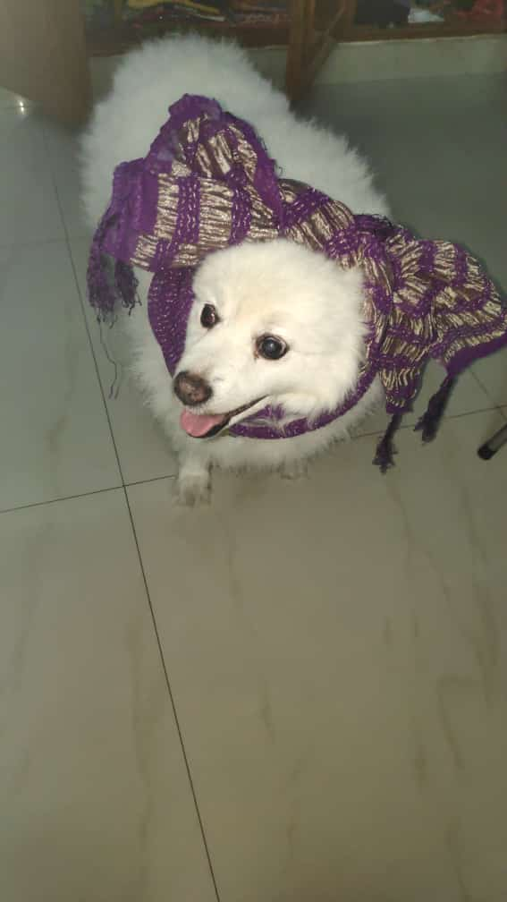
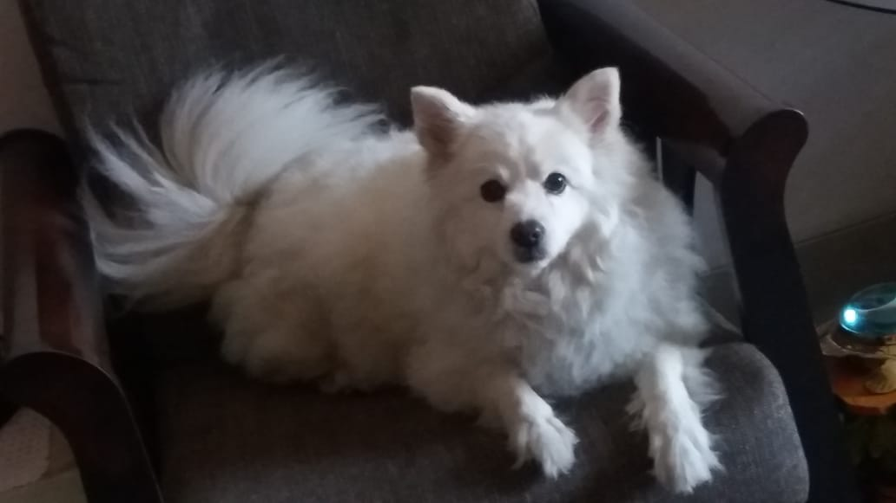

Hello All, I am Dolly S Rao! After my demise I wanted to be remmembered through a blog. So here it goes.. I hope you like it!
My Life
Shillong Times
My birthplace
I was born in Shillong in the year 2008. As a pup, I was extremely scared of humans as my first mother didn't like me much. She gave me away after a month to the shopkeeper. I was then adopted by a family consisting of a couple and thier two daughters. My time in Shillong was an amazing experience as could enjoy running around in the garden. I had baiyas to groom me often, play with me and take me for walks as well. I spent a lot of time with my two sisters (the daughters) playing fetch, tug-of-war. I had complete freedom to run around in that bungalow. There were no other stray dogs which I had to fear from except for my enemy "The Cat." Once, she even scratched my ear while I was out exploring my compound area. The cantonment and the garden offered me a variety of smells, the freedom to explore and visit my neighbors, one of them often fed me cheese parathas. It was very generous of her, though she never did that to my sisters or my mother. I was lucky that way. ;) I have a lot more memories of Shillong that I cherish, for this was the place where I had my first car ride which became my new found love. I craved to go on car rides, go for long rides to even visit Sweet Falls with my sisters. I used to often drop and pick up my sisters from school after thier board exams. It used to be a lovely surprise to meet and greet them. At home, sitting in front of the fireplace seemed cozy except for the part where an expected charcoal could fall anytime a few inches away from me.
Goa Days
Beachy Abode
Unlike Shillong, this abode had a compound wall all around the bungalow. This was an initiative taken by my dad especially for my safety. I had vast land with abundant greenery to just myself. We used to have a routine family tea time every morning at 7am and every evening at 4pm in the sit out area where I would closely listen the chit-chats.In the afternoon at 1230pm, I would ask my sister to let me out so that I could soak in the blissful sunrays and relax. Accompanying my mother during her evening walks was my favourite hobby. One thing I never looked forward to in Goa were the early morning walks at 6am with baiyas. I was the first one to get ready, get groomed every day while all the others snored in the early hours. I often looked forward to tag along with my sister in the garden while she explored nature, the birds, the flowers. We were best partners. At the same time, I felt a sense of emptiness as my dad and my other sister were away from us. Nevertheless, I had a great time in this posting. It was definitely a priviledge to have such a vast expanse of land to myself. In Goa, I used to sleep in my parents' room under the AC since the weather was quite hot and humid during the summers. I loved it when people visited my house and mingled with us.
My Hometown
BANGALORE
Excellent experience
Tug-of-War- I used to play this game often with my twin sisters. I used to develop a crazy look after and while playing. I would be ever-ready to play this game. Time used to fly so fast that I wouldn't realise.
Great experience
This was something I used to look forward to every day since this was one time I could step out of my house and hang out with my family.
My Experience
-
Becoming a mom for the first and the last time, 2009

I had a fairy tale love followed by birth of 3 pups out of which one was a still birth. I had to endure the pain for hours during my labor which was followed by an intense month. I had not attend to my nature call for two days after the delivery, such was dedication to my kids. On the third day, I ran down, did what I had to do and came back in an instant. I refused to leave my pups at the mercy of the humans. It was after a week that I allowed my family to touch my kids. They were fed and taken care off very well by all of us. The instant kicking of the maternal instincts just after delivery is surely god's magic.
-
Diwali festival - Horrific
Diwali vacation was something I wanted to exsape from each year. Little could I comprehend the joy the humans felt by polluting the environment and causing noise pollution. I used to wonder if human folk would ever realise the consequences of these in the long run. I used to somehow hide myself inside the bathroom or in the most silent room. I spent those evenings and nights shivering for hours at stretch. These were the scariest days of my life. My sisters would often comfort me, sit with me through these moments. Given a chance I would have resorted to escape from that place.
Contact
If I have any beliefs about immortality it is that certain dogs I know will go to heaven, and very very few people. -James Thurber
